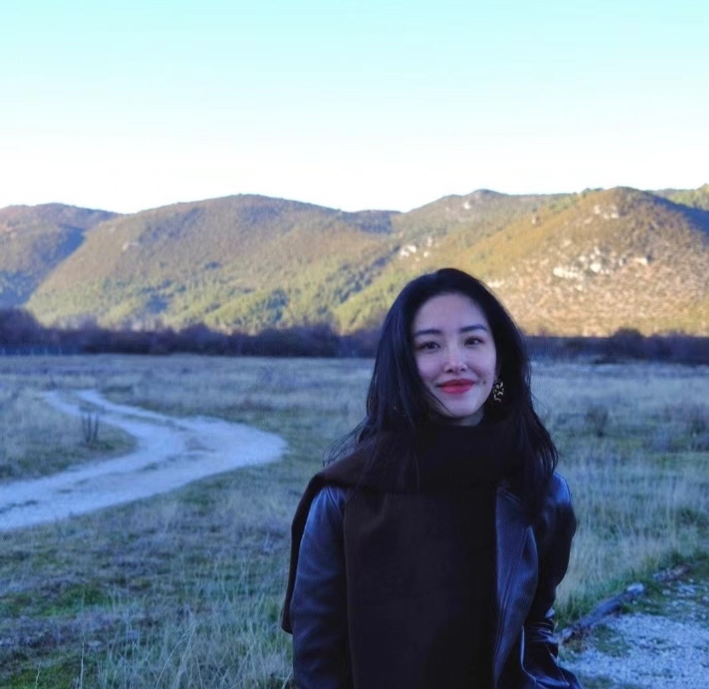
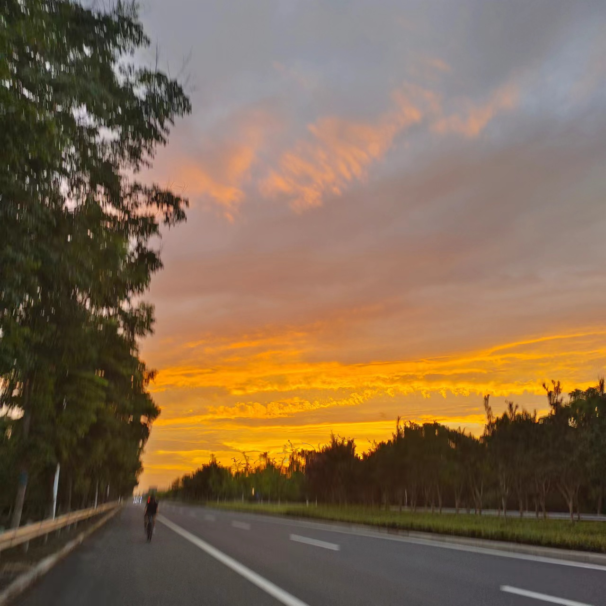
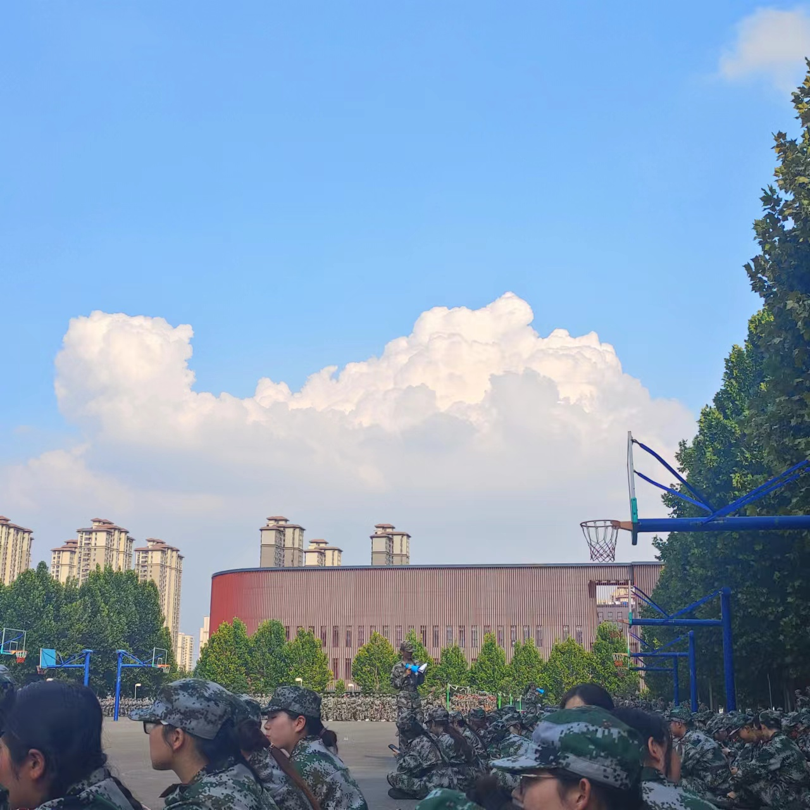

|
我的个人简介 ^-^
| 学校： |
郑州轻工业大学（点击跳转链接） |
| 专业班级： |
网络工程（云计算）21-07 |
| 姓名： |
秦明怡 |
| 学号： |
542107280715 |
| 性别： |
女 |
| 爱好： |
书法，画画，学习，追剧 |
你看—— o_o |
 |
|  |
喜欢的一段话送给你：
世间万事岂能尽如人意，世上有那么多事情发生，人总是要往前看的。这天下没有谁是谁的靠山。凡事最好也不要太指望人。大家都有各自的难处。实在要指望也不能太多太深。指望越多，难免会有些失望。失望一多就升怨怼。怨怼一升，仇恨就起。这日子就难过了。人只能要求的是自己，对任何人都不能要求。这个世界属于你。于他人毫无关系。
其实没什么好后悔的，很多事情就算时间能重来一遍，以当时的心智和阅历还是会做同样的选择，避免不了同样的结果。人本来就是在失败中学乖的，与其抱着过去后悔，不如擦擦眼泪向前走吧。 |
下面是我的个人简介。
在校期间我自觉遵守校规校纪，在思想上，我以成为新时期的优秀青年为目标，认真学习新思想，不断加强思想政治理论的学习，严格要求自己，树立了正确的价值观，人生观和世界观。在学习上，学习态度端正，努力学好专业知识，认真总结每一次考试，不断查漏补缺。课余时间努力去拓展课外知识，积极参加各类创新比赛，提升自己的创新意识和综合素质。在大一学年取得了综合考评年级第四，学习成绩年级第八的优异成绩，并获得了国家励志奖学金；大二综合考评年级第三，学习成绩年级第一；连续两年获得校级一等奖学金。在生活上，主动参与疫情防控志愿活动，提高社会责任感。在寒假期间成为一名抗疫志愿者，在值守点协助分包单位工作人员开展进出人员和车辆登记，体温测量，查验行程码、健康码及核酸检测证明，认真为乡镇居民把好安全第一关，为疫情防控贡献自己的绵薄之力，用实际行动诠释新时代大学生的责任与担当。
emm
总之，要想更多地了解我，就来看看我的网页吧。 |
 |
|
| |